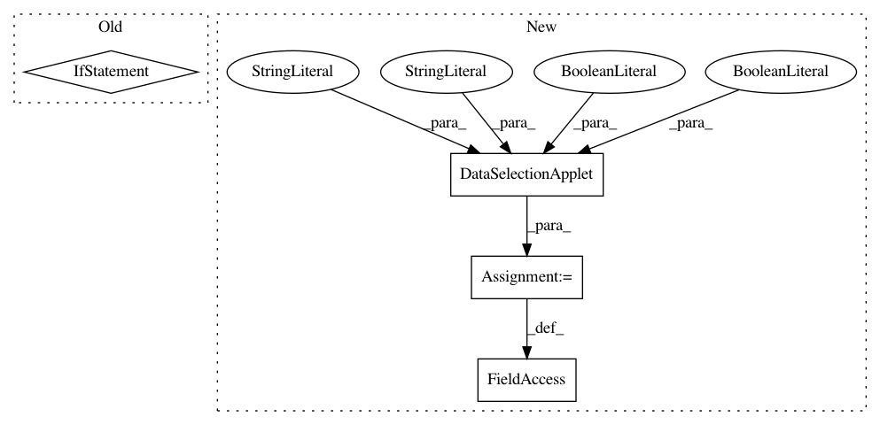

9418883d418ecccd7fe5da4dddffdc01064efb23,ilastik/workflows/carving/splitBodyCarvingWorkflow.py,SplitBodyCarvingWorkflow,__init__,#SplitBodyCarvingWorkflow#Any#Any#Any#Any#Any#,74
Before Change
arg_parser = argparse.ArgumentParser(description="Specify parameters for the split-body carving workflow")
arg_parser.add_argument("--split_tool_param_file", required=False)
parsed_args, unused_args = arg_parser.parse_known_args(workflow_cmdline_args)
if unused_args:
logger.warn("Unused command-line args: {}".format( unused_args ))
if parsed_args.split_tool_param_file is None:
logger.warn("Missing cmd-line arg: --split_tool_param_file")
else:
logger.debug("Parsing split tool parameters: {}".format( parsed_args.split_tool_param_file ))
After Change
projectFileGroupName="carving")
self.splitBodyPostprocessingApplet = SplitBodyPostprocessingApplet(workflow=self)
self.splitBodySupervoxelExportApplet = SplitBodySupervoxelExportApplet(workflow=self)
// Expose to shell
self._applets = []
self._applets.append(self.projectMetadataApplet)
self._applets.append(self.dataSelectionApplet)
self._applets.append(self.preprocessingApplet)
self._applets.append(self.splitBodyCarvingApplet)
In pattern: SUPERPATTERN
Frequency: 3
Non-data size: 4
Instances
Project Name: ilastik/ilastik
Commit Name: 9418883d418ecccd7fe5da4dddffdc01064efb23
Time: 2014-03-26
Author: bergs@janelia.hhmi.org
File Name: ilastik/workflows/carving/splitBodyCarvingWorkflow.py
Class Name: SplitBodyCarvingWorkflow
Method Name: __init__
Project Name: ilastik/ilastik
Commit Name: 9418883d418ecccd7fe5da4dddffdc01064efb23
Time: 2014-03-26
Author: bergs@janelia.hhmi.org
File Name: ilastik/workflow.py
Class Name: Workflow
Method Name: __init__
Project Name: ilastik/ilastik
Commit Name: 9418883d418ecccd7fe5da4dddffdc01064efb23
Time: 2014-03-26
Author: bergs@janelia.hhmi.org
File Name: ilastik/workflows/carving/carvingWorkflow.py
Class Name: CarvingWorkflow
Method Name: __init__